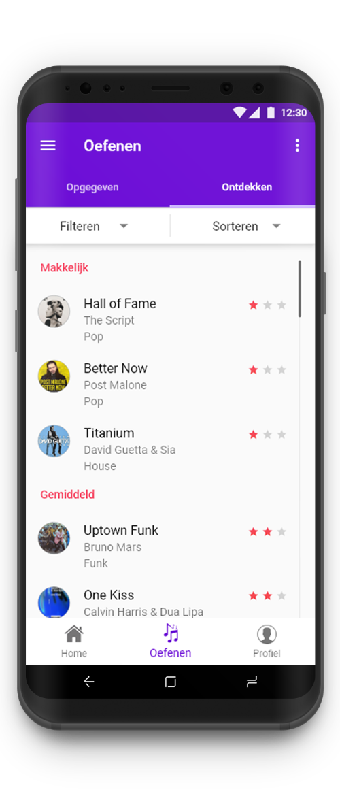
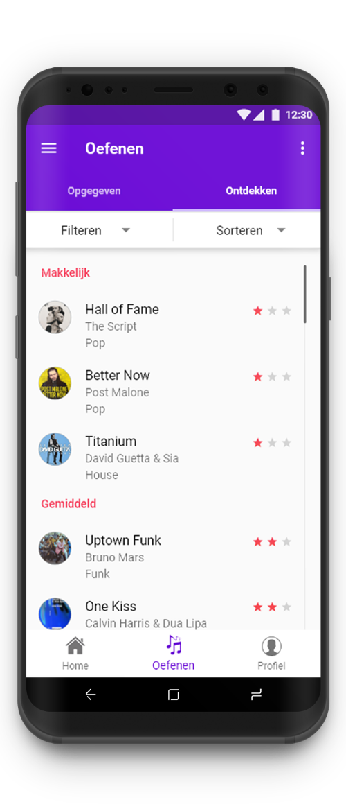

Research
In het begin zijn we meteen begonnen met het bepalen van een doelgroep. We hebben gekozen voor kinderen tussen 12 en 15 jaar die muziekles volgen. Aan de hand van deze doelgroep hebben we een enquête uitgevoerd. Het belangrijkste dat uit de enquête naar voren kwam, is dat iedereen van de respondenten thuis naast de muzieklessen oefent. Het verschil is dat zij voornamelijk YouTube video's gebruiken om verder te oefenen. Bij YouTube video's is echter wel het geval dat de communicatie eenrichtingsverkeer is, waardoor de doelgroep eigenlijk niet weet of ze het wel goed spelen.
Concepting


Om snel oplossingen te bedenken voor bepaalde vraagstukken waar de doelgroep baat bij heeft, hebben we eerst enkele Hoe Kun Je's uitgevoerd. Hier hebben we grof bedacht welke functionaliteiten de applicatie moet bevatten.Vervolgens heeft er een brainstormsessie plaatsgevonden in de vorm van de 6-3-5 methode. Met deze methode bedenkt ieder groepslid elke 5 minuten drie ideeën die een oplossing moeten bieden aan het probleem. Na de sessie hebben we de ideeën gesorteerd en zijn we begonnen met het creëren van het concept.
 
